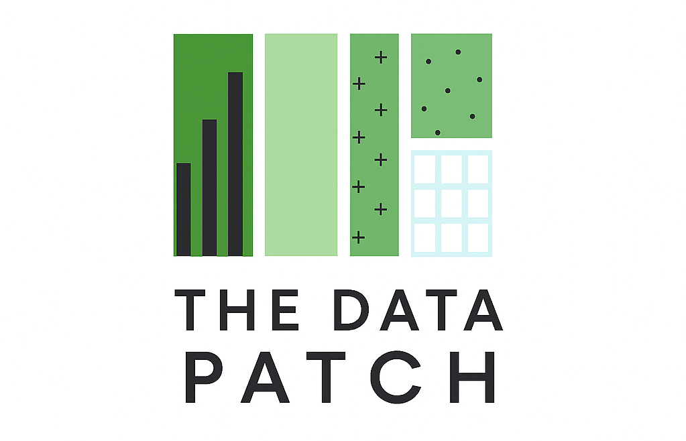

Publishing Code
Using GitHub releases and Zenodo DOIs
to create citable code snapshots
Stephen Formel ![]()

2025-01-29
 is not an archive
is not an archive
- Excellent for collaboration
- No preservation guarantee
- Not designed for citation
- owned by private corporation (Microsoft)
 (for code)
(for code)
Generalist research repository
Free and widely used
Issues DOIs via DataCite
Integrates with GitHub releases
operated by CERN
+ model
GitHub: active development | where code lives
Zenodo: frozen snapshots | where code is cited
Versioning and DOIs
Each GitHub release → new Zenodo version
Each version gets its own 
One parent ‘concept’  always points to the latest version
always points to the latest version
Pre-work:
did you make a  account?
account?
If not, do it here